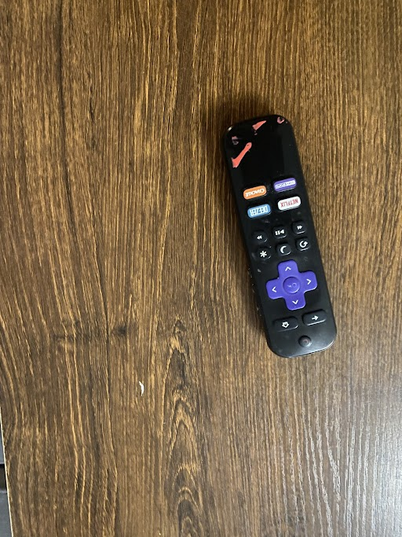
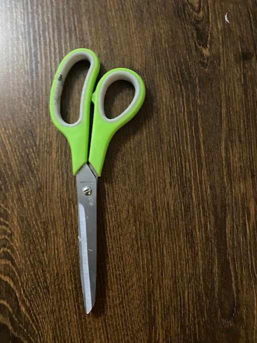
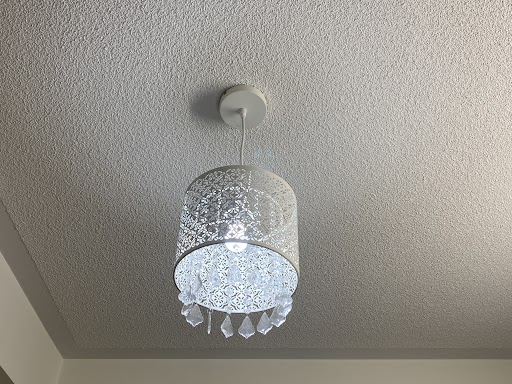

Output on Google LensHarry Potter & The Philospher's Stone
Output on Mobilenet Model Comic Book
Result
Google Lens is WAY more accurate.
Test Image - 
Output on Google Lens :-
HTR Remote
Output on Mobilenet Model :-
Remote Control
Result
Google Lens is more accurate!
Test Image - 
Output on Google Lens :-
Car Roof Bag Accessory
Output on Mobilenet Model :-
Knife
MobileNet is mroe accurate.
Test Image -
Output on Google Lens :-
Harry Potter & The Prisinor of Azkaban
Output on Mobilenet Model :-
Chihuahua
Result
Google Lens is more accurate!
Test Image - 
Output on Google Lens :-
Drum Pendant Light
Output on Mobilenet Model :-
Lamp Shade
Result
Google Lens is more accurate!
I have tested 5 images Google Lens have predicted 4 of them more accurately. And MobileNet was less accurately
So according to my case study Google Lens is more Accurate